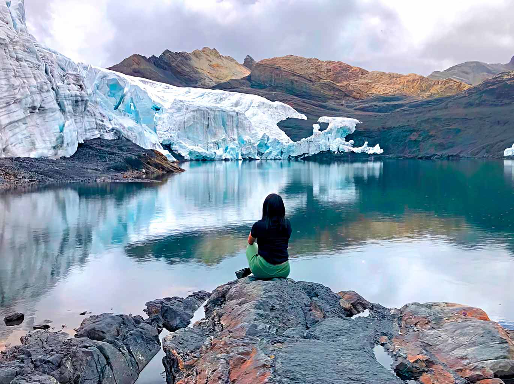
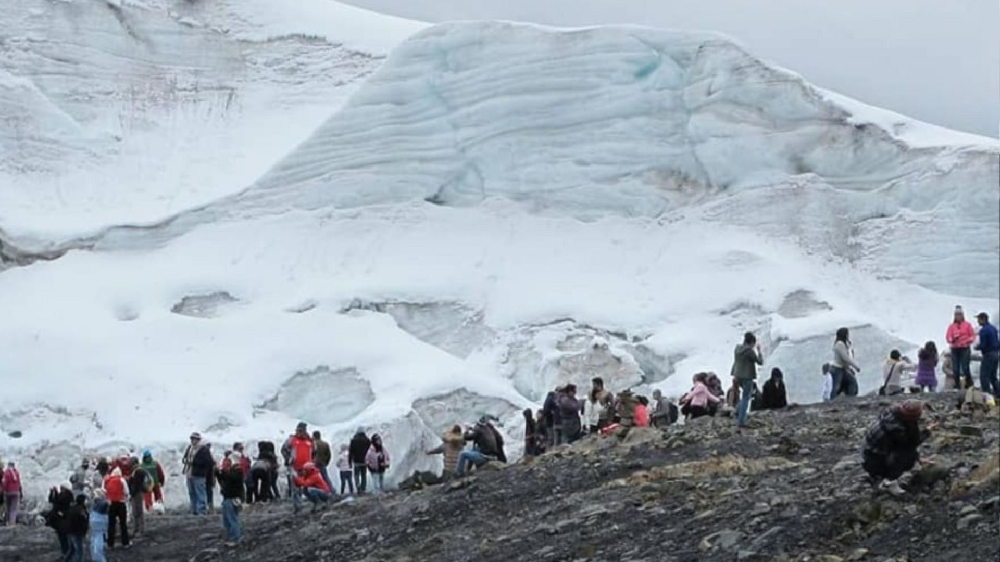
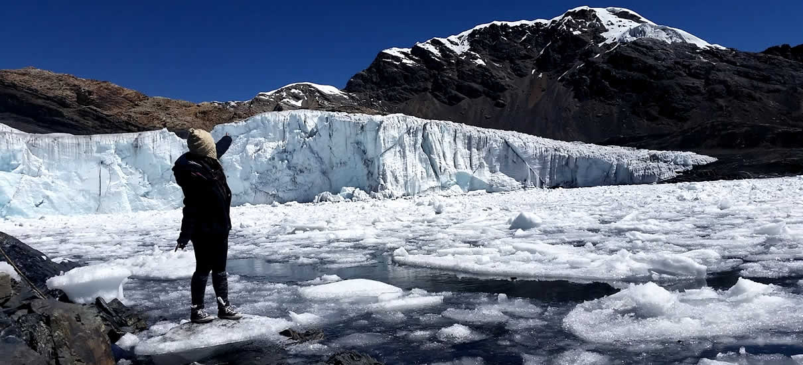
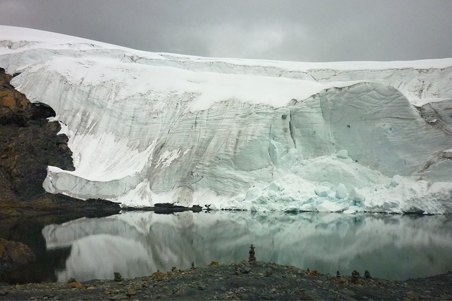

Nevado Pastoruri: Un gigante de hielo en los Andes
El Nevado Pastoruri es uno de los glaciares más accesibles de la Cordillera Blanca, ubicado en el Parque Nacional Huascarán. A pesar del retroceso del hielo debido al cambio climático, sigue siendo un destino impresionante para quienes desean conocer un nevado de cerca y disfrutar de la belleza de los Andes peruanos.
Historia
En el pasado, Pastoruri fue un punto clave para la práctica del esquí en Perú. Sin embargo, el calentamiento global ha reducido considerablemente su masa de hielo, transformándolo en un lugar de observación y concienciación sobre el cambio climático.




Actividades y Recomendaciones
- Senderismo: Recorre el camino que lleva hasta la base del nevado, disfrutando del paisaje andino.
- Fotografía: Captura la majestuosidad del nevado y la flora única de la zona, como la Puya Raimondi.
- Concienciación ambiental: Aprende sobre el impacto del cambio climático en los glaciares peruanos.
- Aclimatación: Pastoruri se encuentra a más de 5,000 m s.n.m., por lo que se recomienda aclimatarse previamente en Huaraz.
- Protección del ecosistema: No toques el hielo ni dejes residuos para ayudar a conservar este importante glaciar.